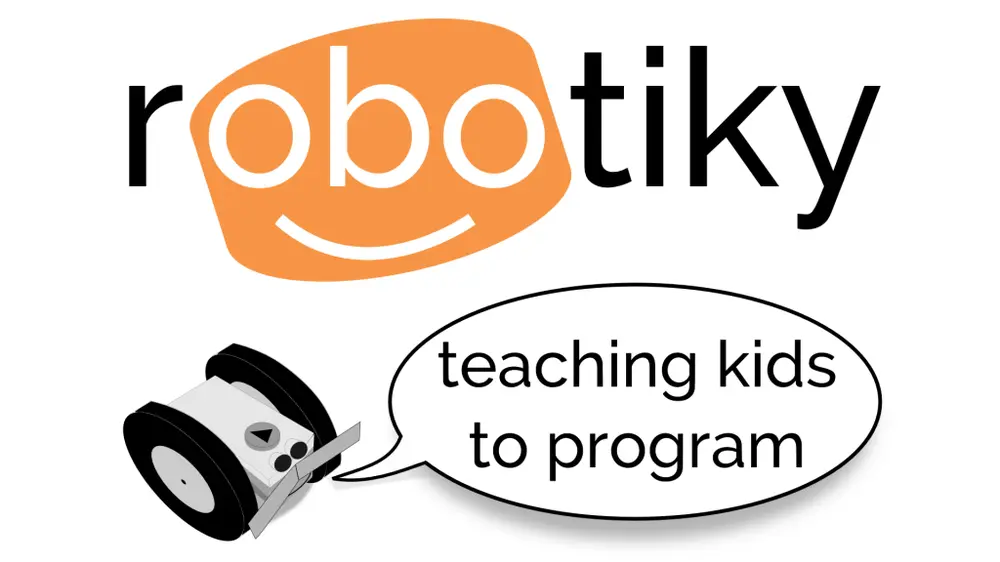

On March 9th Manchester CoderDojo will be trying out the software behind Robotiky using its built in online Simulator!
Robotiky is a small robot who, with the help of online tutorials and games, teaches programming and problem solving skills.
Starting off with drag and drop exercises and smoothly transitioning within the same environment to text based programming languages – Robotiky can take an absolute beginner to a confident programmer.
Robotiky is about to be released to the rest of the world, but on Sunday you get to have a sneak preview and try it out before anyone else!
If you really want to get ahead of the game, then take a look at www.robotiky.com/demo
Happy coding!